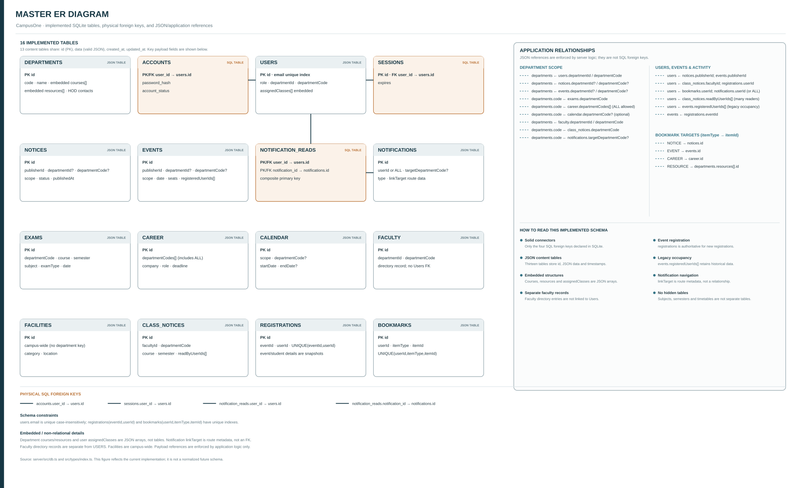
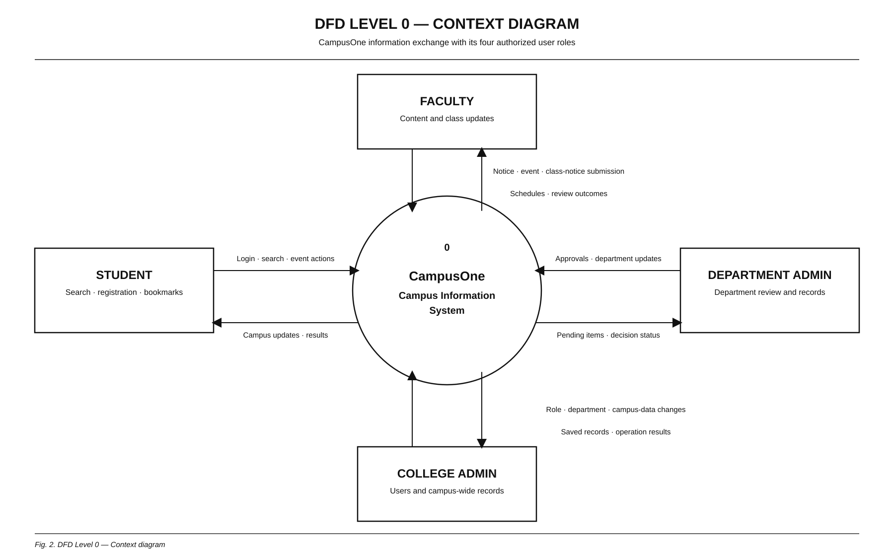
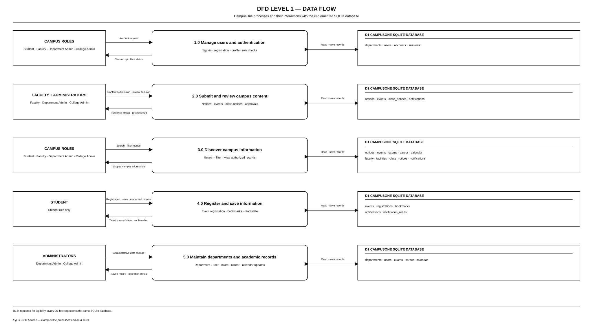
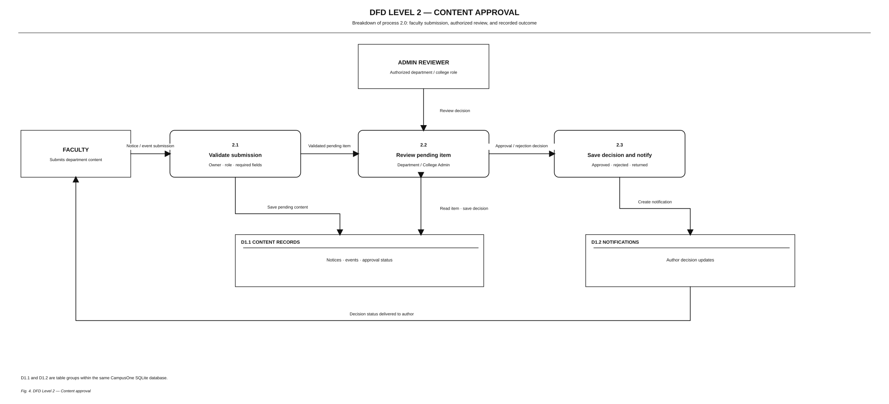
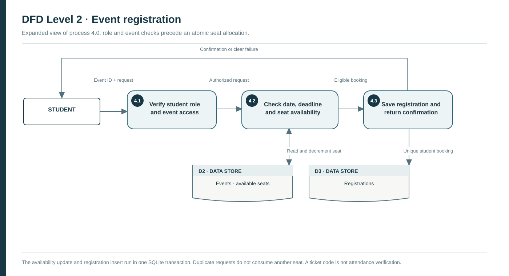

Five report-ready figures: one master ER diagram and DFD Levels 0–2. The ER figure covers all 16 implemented SQLite tables.
All implemented tables, physical SQL foreign keys and JSON/application references.

Campus users exchange information with CampusOne; the AI provider is optional.

Four main workflows and the data they read or update.

Faculty submission, authorized review and decision recording.

Eligibility, availability and transactional registration.
